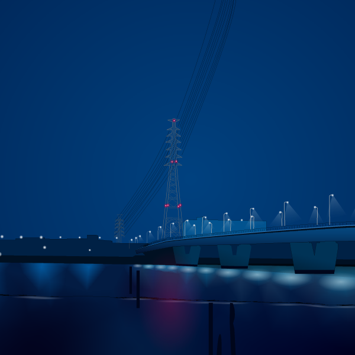

Hello! My name is Noah Atwell, and I am a student at Seminole State College. I am planning to transfer to UCF or a college in NYC after getting my Associate in Arts degree from Seminole State. I have experience with various design programs and have invested a significant amount of time in them. Creating things and pushing my creativity to the utmost limit is something I thoroughly enjoy. I particularly enjoy video editing and have been doing it for quite some time. Recently, I started using After Effects and I am enjoying it. I've spent most of my time editing in Sony Vegas.